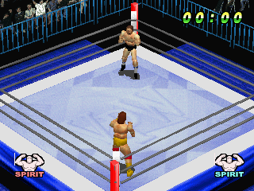
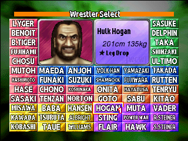
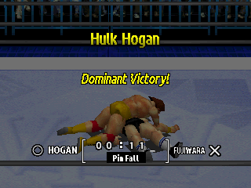
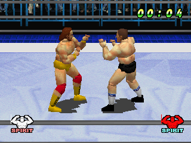
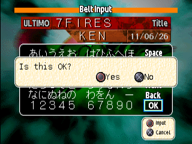
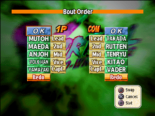
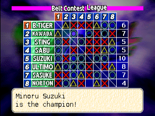

The Game

Virtual Pro Wrestling (バーチャル・プロレスリング, Bācharu Puroresu) is a 3D pro wrestling game from Asmik Ace Entertainment, developed by AKI Corporation, released on the PlayStation in Japan on 13 September 1996. The Western version is WCW vs. the World, which uses the same engine but has a different roster and different move names. This guide is for the Japanese game as the English fan patch shows it.
Two players, or one against the computer, wrestle one-on-one on a 3D ring. There is no health bar. You win by pinning your opponent for a three count, making him give up in a hold, knocking him out, or leaving him outside the ring too long. The only meter on screen is SPIRIT, your momentum.
- 60 wrestlers. Real Japanese and American stars from six wrestling promotions, with eight secret wrestlers. Every wrestler has his own move list of about forty moves. See the Wrestler Database. The patch ships in two versions: real names, or the game's parody names (a switch at the top of every page changes which names this guide shows).
- Seven ways to play. Official Match, Seven-Bout Blaze, Exhibition, Elimination, Tournament, League and Double Title Match. See Modes.
- Belts you create. Win a Tournament or League with a belt on the line, or beat Seven-Bout Blaze, and you name a title and save it on your Memory Card.
- One-button grapples. Every grapple is one button, Circle, and the direction you hold, how long you hold it and how close you stand choose the move. See Controls.
Matches are always one against one. Even Elimination is a series of one-on-one bouts, not tag matches.
Your First Match
From power-on to the opening bell, as an Exhibition Match against the computer.

- Skip the intro movies. Two movies play. Press Start once to skip each. After a few seconds the title appears with Press Start Button.
- Press Start to show Game Start and Options. Press Circle on Game Start.
- Mode Select. Seven orange buttons appear. Press Down twice to reach Exhibition Match. Press Triangle on any button for a short help box. Press Circle to choose.
- 1P vs 2P or 1P vs COM. Press Down for 1P vs COM and Circle.
- Wrestler Select. Move over the grid with the D-pad and press Circle to pick your wrestler. Press Start instead to pick him in his second costume. The bio box shows his name, height, weight and a star move. Then pick the computer's wrestler the same way. Cross undoes your pick.
- The intro card. After Now Loading... a card shows the mode, the rules (here No Time Limit, 1 Fall) and the two names. The ring and its mat are random unless you set them in Rule Settings.
- The bell. The clock at the top counts up from 00:00. Your SPIRIT icon is in the bottom-left corner, the computer's in the bottom-right (see the match screen).
A first game plan

- Walk up to your opponent with the D-pad. Tap Cross for quick strikes. Hold Square to guard when he swings.
- Standing right next to him, tap Circle to throw him. Tap it with Up or Down held for different throws, or hold it for a stronger grapple.
- When he is down, press Cross to stomp, Square to pull him up, Circle for a ground hold, or Triangle to pin him. A fresh opponent kicks out at once, so wear him down first: pin when he has been hurt and keeps staying down.
- Press L2 to taunt and build SPIRIT. When your SPIRIT icon flashes white, hold Circle for about a second next to him and let go: your special move. Most specials end in a pin.
- If you are pinned, mash the face buttons. If you are down, mash to get up sooner. If you are thrown out of the ring, walk to the apron, push toward the ring and press Square.
- After the three count the winner's name and a phrase such as Total Victory! appear with the time and how it ended. Press Circle for Continue?: Rematch or End (back to the title).
Controls
The game uses a standard PlayStation controller: no analog stick is needed. There is no separate grapple button, no block button and no camera button. Which move you get depends on what you hold, how long you hold it and how close you are. Both players use the same layout.
Quick reference
Standing
- D-pad
- Walk
- Triangle + direction
- Run; bounce off the ropes
- Cross
- Strike (tap or hold)
- R2
- Dash attack
Grappling
- Tap Circle
- Grapple. Close and far differ; Up or Down changes it
- Hold Circle
- Strong grapple
- Circle + direction, Circle again
- Irish whip into the ropes or a corner
He is down
- Triangle
- Pin
- Square
- Pull him up
- Circle
- Ground hold
- Cross
- Stomp or drop
Defence
- Hold Square
- Guard against strikes
- R1
- Back-step out of a grab
- Face buttons
- Mash: kick out of a pin, get up sooner, end a hold sooner. Press as he grabs to counter (SPIRIT 36+)
Spirit
- L2
- Taunt: +5 SPIRIT
- Hold Circle, release
- Special move, while the icon flashes white
Menus
| Button | What it does |
|---|---|
| Up Down | Move the cursor. On entrant screens, Left and Right change the number of players or computer entrants. |
| Circle | Select or confirm. |
| Cross | Cancel, or go back one screen. On Wrestler Select it undoes your last pick. |
| Triangle | Help: a box explaining the highlighted item. On Belt Record it shows the belt's past holders. |
| Start | Skips an intro movie; opens the menu from the title. On Wrestler Select it picks the wrestler in his second costume instead of Circle's normal one. |
Moving and running
| Input | Result |
|---|---|
| D-pad | Walk. Directions are fixed to the ring, not to your wrestler's facing. |
| Triangle + direction | Run that way. You keep running after you let go; you bounce off the ropes and come back. A run stops when you press any direction, Square or Triangle. |
| Triangle alone | Run straight at your opponent and stop just short of him. |
| Cross or Circle while running | Running attack. |
| Triangle + Circle, or R2 | Dash attack from a standstill. Both inputs give the same move. |
| L1 | Leapfrog. If your opponent runs at you he passes under you and runs on to the ropes. No damage; you gain a little SPIRIT. |
| L2 | Taunt (each wrestler has his own). Raises your SPIRIT by 5. |
Strikes and defence
| Input | Result |
|---|---|
| Cross | Strike. Tap it quickly or hold it a little longer; near and far give different strikes. Strings of strikes hit harder the longer you keep them going, and the twelfth in a row always staggers him. |
| Hold Square | Guard. Blocks Cross strikes completely; each block gives you a little SPIRIT. It does not stop a grab. |
| Hold Square + Cross | Catch stance. If his strike lands while you hold it, you reverse it: one move against a tapped strike, another against a held one. |
| R1, or Square twice quickly | Back-step: a small hop straight back. An incoming grab misses; a strike already on its way still lands. |
Grapples
All grapples are on Circle. What you get depends on four things:
- Tap or hold. Release quickly (about a quarter of a second) for a tap; keep it down for a hold, the strong grapple.
- Close or far. A close tap (he is right in front of you) is a different move from a far tap (a few steps away).
- Up or Down. Only Up and Down change a grapple. Left, Right and no direction all give the same move.
- Behind him. From behind there is a separate set of moves (tap and hold; Up and Down give the same one).
Some throws end with a pin count already running. Others are holds that squeeze until he escapes or gives up. The database marks each move.
Irish whip
Tap Circle while holding a direction, tap Circle again before you reach him, and keep the direction held until the grab connects. A straight direction sends him into the ropes and he rebounds toward you. A diagonal sends him into that corner, where he stays dazed. Let go of the direction too early and you get a normal grapple.
- When he rebounds at you, tap or hold Circle face to face for a counter-throw, press L1 to leapfrog, or press Cross or Circle while running for a running attack.
- Hold Circle on a man dazed in the corner for a strong corner move.
When he is on the mat
These work when you are close to a lying opponent.
| Input | Result |
|---|---|
| Triangle | Cover and pin. The referee counts 1, 2, 3 in big numbers on screen. Press Square to release your own pin. |
| Square | Pull him up to his feet by the head. |
| Circle | Ground hold. Which hold depends on whether you stand near his head or his feet. |
| Cross | Stomp, drop or splash. |
With the Rope Break rule on, a pin or hold near the ropes is broken. Outside the ring a pin count never starts.
Ropes, corners and outside
| Input | Result |
|---|---|
| Walk into a corner, then the diagonal toward it + Cross | Climb the turnbuckle and jump at him: a different move for a lying and a standing opponent. Any other diagonal is just a strike. Square climbs down. |
| With him outside: push into the ropes + Circle | Springboard dive over the ropes (wrestlers who have it; see the database). |
| With him outside: Triangle + direction toward the ropes, then Circle | Running dive through the ropes (wrestlers who have it). |
| Push into the ropes + Square | Leave the ring. This works only when your opponent is already outside. |
| Outside, push toward the ring at the apron + Square | Climb back in. A big ring-out count shows while someone is outside. |
When you are on the receiving end
| Situation | What to press |
|---|---|
| Grabbed with a close tap (or a tap from behind) | Press any face button right as he grabs you. You need SPIRIT of at least 36; the chance of a counter equals your SPIRIT percentage. Some counters roll him into a pin. |
| Caught dazed in the corner by a held grab | Press face buttons straight away; each press has a small chance to reverse it. |
| Irish-whipped | Face button with SPIRIT of 36 or more: a chance to stop instead of bouncing, or to avoid the corner daze. |
| Strike coming | Hold Square to guard, or Square + Cross to catch it. |
| Grab coming | Back-step with R1. |
| Lying on the mat | You get up by yourself. Mashing face buttons gets you up a little sooner; holding Square keeps you down about twice as long. |
| Pinned | Mash the face buttons: every three presses shorten the count's kickout timer a little. Wrestlers with SPIRIT of 90 or more cannot be pinned. |
| In a hold | Mash face buttons to end it sooner. A face button + a direction crawls toward the ropes for a rope break. There is no give-up button: you submit on your own only if you are badly hurt and your SPIRIT is below 90. |
The special move
When your SPIRIT reaches 100 your wrestler strikes a short flash pose (you cannot act for just over a second) and the SPIRIT icon turns white and flashes. For the next 30 seconds, stand next to your opponent, hold Circle for about a second and release: your special move. During those 30 seconds your SPIRIT cannot fall and you cannot be knocked out. After 30 seconds SPIRIT drops back to 50. See Rules.

Pause and match end
Start pauses with Resume and Skip Match. Cross also resumes. Skip Match ends the bout as a time-up draw.
Two players
In 1P vs 2P, controller 2 drives the second wrestler with the same layout. In 1P vs COM, controller 1 picks both wrestlers on the select screen.
Modes
Press Circle on Game Start for the Mode Select screen. Press Triangle on any button for its help text.
| Mode | Players | What it is | Needs a Memory Card |
|---|---|---|---|
| Official Match | 1P | The main challenge: pick a wrestler, then take on a promotion and beat its wrestlers one after another. | Only to save your progress |
| Seven-Bout Blaze | 1P | Seven bouts against seven random opponents from any promotion. Win all seven to create your own belt. | Yes, with free blocks |
| Exhibition Match | 1P vs 2P, 1P vs COM | A single match. The only mode that uses every rule setting, including 3 Falls. | No |
| Elimination Match | 1P vs 2P, 1P vs COM | A team battle: five wrestlers a side, fought as one-on-one bouts. | No |
| Tournament | 1 to 8 players, plus computer entrants | A single-elimination bracket of up to 8, played in one night. A belt can be bet on it. | Only for belt bets |
| League Match | 1 to 8 players, plus computer entrants | A round robin of 3 to 8 entrants. A belt can be bet on it. | Only for belt bets |
| Double Title Match | 1P vs 2P | A versus match where each player bets a belt from his own Memory Card. | Yes, in both slots, each with belt data |
Official Match
Pick your wrestler on Wrestler Select, then choose a promotion from the list: Neo Strong, Empire Pro, Wrestle Universe, Dead or Alive, Local Wrestling and Inter-American. You then face that promotion's wrestlers in turn, with no menu between wins. You may challenge your own wrestler's promotion. Beat the last of them and the promotion's tag appears over Title Won!.
- Every bout is one fall. The match uses the time limit from Rule Settings, and the ring of the promotion you are challenging.
- If you lose or draw, Continue? lets you choose Rematch or End.
- Beaten promotions are marked Clear! on the list. Clearing promotions unlocks the secret wrestlers; see Secrets.
- Save your progress with Options > Save.
Seven-Bout Blaze

A series of seven matches against seven randomly chosen opponents from any promotion. When you win a bout you move on to the next. If you tie or lose, you are offered the chance to try that bout again. Win all seven and you create a belt: you enter its title, your name and the date, and it is saved on your Memory Card. It then appears in Options > Belt Record, with its list of past holders. Secret wrestlers do not appear here.
Exhibition Match
Choose 1P vs 2P or 1P vs COM, pick the wrestlers and fight. It is the only mode that honours every rule: ring, time limit (none, 5, 10, 30 or 60 minutes), 1 or 3 falls, Ringout Count, Rope Break and TKO. Unlocked secret wrestlers appear on its select grid. After the match, Continue? offers Rematch or End.
Elimination Match

Choose 1P vs 2P or 1P vs COM, then Winner Stays or Team Match. Each side picks five wrestlers (in 1P vs COM, controller 1 picks both teams). Then the Bout Order screen lets you arrange each team into Lead, 2nd, Mid, Vice and Capt.: press Circle on two names to swap them, OK when done, or Redo to pick everyone again. Before each bout a screen announces No. 1 Bout and so on up to the Final Bout.
- Winner Stays: the side that first beats all five opposing wrestlers wins.
- Team Match: the teams fight in the set order, and the side that wins three bouts first takes it.
- Every bout is one fall and honours the time limit.
Tournament
On the entrants screen choose how many human and computer entrants (Left and Right): up to eight in all; with one human player, at least one computer entrant is added. Then choose No Belt Bet, Bet a New Belt or Bet a Saved Belt (the last two need a Memory Card). Each human picks a wrestler, then the computer entrants' wrestlers are picked on the same grid. The bracket, headed One Night Tournament (Belt Contest Tournament when a belt is at stake), shows a pad icon beside each human entrant. Computer-versus-computer bouts can be watched (Circle, View) or skipped (Cross, Skip). The winner is announced with X is the champion!.
League Match

The same entrant and belt choices as the Tournament, with three to eight entrants. Everyone fights everyone once. The table shows each result: a circle for a win (2 points), a triangle for a draw (1 point) and a cross for a loss (0 points), with each entrant's total at the right. The highest total wins the league and is announced as the champion.
Belts
With a belt bet on a Tournament or League, the winner creates the belt on the Memory Card. On the Belt Input screen you type the belt's name, your name and the date with the on-screen keyboard (Space, Back, OK), then confirm with Is this OK?. A saved belt can be bet again in a later Tournament, League or Double Title Match.
- Belt Record (Options) lists the belts on a card. Press Triangle on one for Past Holders.
- In a Double Title Match both players bet a belt from their own cards, so both slots need a card with a belt on it.
Options
On the title screen, Options has Load, Save, Belt Record, Game Settings, Rules and End. Load and Save choose the 1P or 2P Memory Card slot and warn that they overwrite. Every setting is explained, with its default, on the Rules and Systems page.
Strategy
The numbers behind these tips are on the Rules and Systems page.
What newcomers get wrong
- Pinning too early. Pins only work on a man who has been worn down. A fresh opponent kicks out at once, and a wrestler with SPIRIT of 90 or more cannot be pinned at all. Throw, hit and keep him on the mat first.
- Holding Square against grabs. Guard blocks strikes only. Against a grab, hop back with R1.
- Mashing Circle. A tap grapple and a hold grapple are different moves. Learn which of tap, hold, close, far, Up and Down gives the throw you want.
- Standing in the ropes. With Ringout Count on, 20 counts (40 seconds) outside the ring loses the match.
What works
- Build SPIRIT, then spend it. Taunt when you are safe. A white SPIRIT icon means a pin-proof wrestler and a special move on call for 30 seconds.
- Use your best move class. Each wrestler's offence stats make some moves hit harder; check his profile in the database. Against an opponent with a high defence in one body part, use moves from another.
- Pin right after a big move. Big moves drain his SPIRIT and health, which is what makes a pin stick. Pin while your own SPIRIT is high: it adds time to his kickout.
- Save holds for the end. Holds only make a wrestler give up once he is badly hurt and his SPIRIT is below 90. Before that they only squeeze for a few seconds.
- Against the computer on Hard, grab when he is busy: just after his own move or while he is getting up. Throw and strike freely on Easy. See The CPU.
On-screen Messages
The words and marks the match screen and the result screens show, in the order you meet them.
| On screen | When | More |
|---|---|---|
| No Time Limit, 5 Min ... 60 Min; 1 Fall, 3 Falls | The intro card before the bell: the mode, the time limit, the number of falls and the two names. | Rule Settings |
| No. 1 Bout ... Final Bout | Elimination Match: the card before each bout. | Elimination |
| SPIRIT | The icon in each bottom corner: your momentum. Its colour shows the level; flashing white means the special is ready. | The SPIRIT icon |
| 1, 2, 3 | Big numbers during a pin: the referee's count. Three ends the fall. | Pins and kickouts |
| 1 to 20 | A big number while someone is outside: the ring-out count, one number every 2 seconds. | Ring-out |
| Pin Fall! | The referee counted three. The pinner wins. | Pins and kickouts |
| Give Up! | The man in a hold gave up. The man applying it wins. | Give Up! |
| Ring Out! | One man was still outside at the count of 20. The man inside wins. | Ring-out |
| Rope Break! | With Rope Break on, a hold reached the ropes and is broken. The match goes on. | Holds |
| Time Up! | The clock reached the Time Limit. The bout is a draw. | Time limit and draws |
| PAUSE: Resume, Skip Match | Start during a match. Skip Match ends the bout as a Time Up Draw. | Pause |
| Total Victory!, Dominant Victory!, Narrow Victory!, Victory by Wits!, Big Win! | The result screen after a win: a headline over the winner's name. It changes from match to match. | How a match ends |
| Heartbreaking Time-Out / Neither Gives Way! | The result screen after a draw: time up or Skip Match. | Time limit and draws |
| ○ ... ×, △ ... △ | The result bar: ○ beside the winner and × beside the loser, or △ beside both after a draw. | Time limit and draws |
| 04:55, Pin Fall, Time Up Draw | The time box in the result bar: the match time and how it ended, either a label or the name of the finishing move. | How a match ends |
| Continue? Rematch / End | After an Exhibition Match, and after an Official Match loss or draw. Rematch: the same two wrestlers again. End: back to the title screen. | Official Match |
| Title Won! | Official Match: you beat the last wrestler of the promotion. Its tag shows above. | Secrets |
| Clear! | The Promotion list: a promotion you have beaten in the Official Match. | Secrets |
| X is the champion! | The winner of a Tournament or League. | Tournament |
| Winner | The end of a Tournament, on the bracket. | Tournament |
Japanese Glossary
Terms you will see in the menus of the original Japanese game. The English patch shows the English terms.
| Japanese | Meaning | On screen in the translation |
|---|---|---|
| 公式戦kōshiki-sen | Official match | Official Match |
| 炎の七番勝負honō no nanaban shōbu | Seven bouts of flame | Seven-Bout Blaze |
| ダブルタイトル戦daburu taitoru-sen | Double title match | Double Title Match |
| 勝ち抜きkachinuki | Winner stays on | Winner Stays |
| 対抗戦taikō-sen | Team match | Team Match |
| 先鋒 次鋒 中堅 副将 大将senpō jihō chūken fukushō taishō | Lead, second, middle, vice captain, captain | Lead, 2nd, Mid, Vice, Capt. |
| 団体dantai | Promotion (wrestling organisation) | Promotion |
| 制覇seiha | Conquest | Clear! |
| 優勝yūshō | Championship, winning the tournament | Winner |
| ベルトberuto | Title belt (Memory Card data) | Belt |
| 王座ōza | Title, championship | Title |
| 第〇戦 / 最終戦dai-○-sen / saishū-sen | Bout number / final bout | No. 1 Bout / Final Bout |
| メモリーカードmemorī kādo | Memory Card | Memory Card |
Q&A
Is there an English version?
The game was released only in Japan. The Western game WCW vs. the World shares its engine but has a different roster and different move names. This guide was written alongside an English fan translation, released as a patch for your own copy of the Japanese game.
Where is the health bar?
There is none. Every wrestler has hidden health. You see how hurt he is from how long he stays down and whether he kicks out of pins. The only meter is the SPIRIT icon in each bottom corner; you can hide it in Game Settings.
Are there tag matches?
No. Every match is one against one. Elimination is a series of one-on-one bouts.
What is the star move on the wrestler select screen?
It is a label in the picture, not a separate move. A wrestler's real finisher is his special move, available when SPIRIT reaches 100.
How do I get the hidden wrestlers?
Win Official Match challenges. See Secrets.
Do I need a Memory Card?
Only for Seven-Bout Blaze, Double Title Match, belt bets and saving progress. Exhibition, Elimination and the Official Match work without one.
What are the real and parody names?
The Japanese game uses parody names for the wrestlers. The patch ships in two versions, real names or the game's own parody names, and the switch at the top of this guide changes which name each page shows.
Credits and Legal
This guide is a non-commercial fan project, not affiliated with or endorsed by Asmik Ace Entertainment, AKI Corporation or their successors. Virtual Pro Wrestling and its names, characters and trademarks belong to their owners.
The text is written in our own words from play, the game's data and the sources below. It contains no scans or images from any printed guidebook. The screenshots are from the English fan translation.
Sources and thanks: Alamar's Guides and the WCW vs. the World manual and fan FAQs, for the Western version's controls and move names; the English Wikipedia articles on both games.
AI assisted with this guide.
The guide text is shared under Creative Commons Attribution-ShareAlike 4.0 (CC BY-SA 4.0; see LICENSE). You are free to share and adapt it, as long as you credit this guide and share alike.
Contributing
Corrections are welcome: open an issue on the project's GitHub repository.